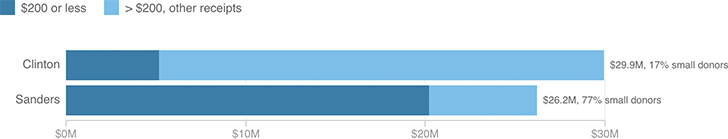

Similar Fundraising, Different Sources
Clinton and Sanders raised similar amounts last quarter, but their sources were nearly opposite -- around one-fifth of Clinton's donations came from donations of less than $200, compared to Sanders' nealry four-fifths.
